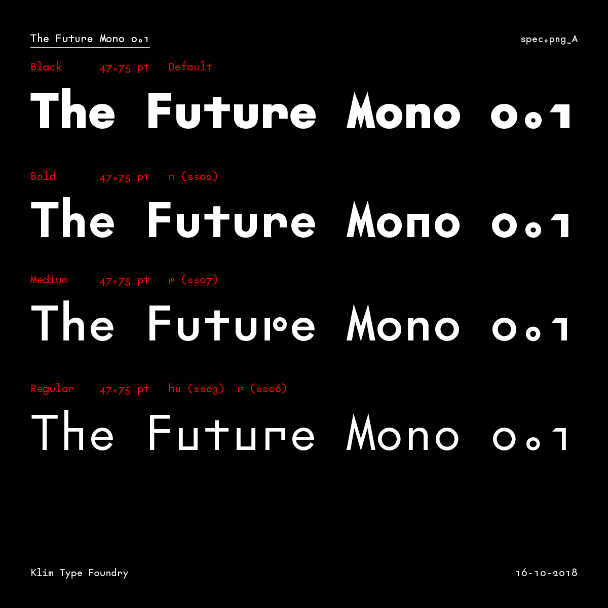
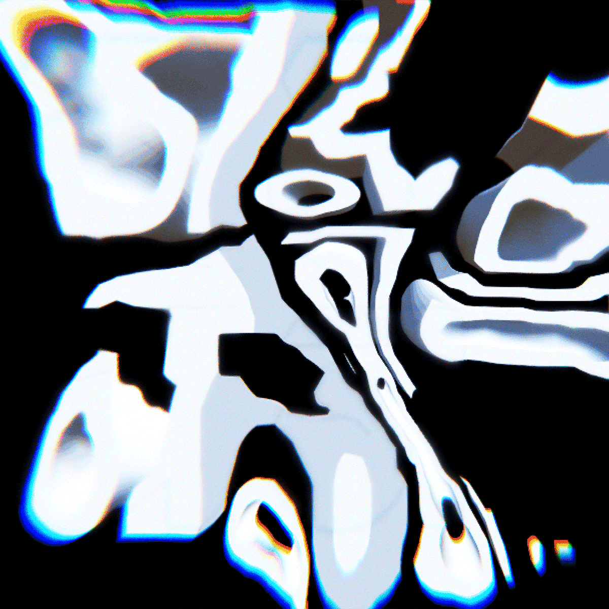
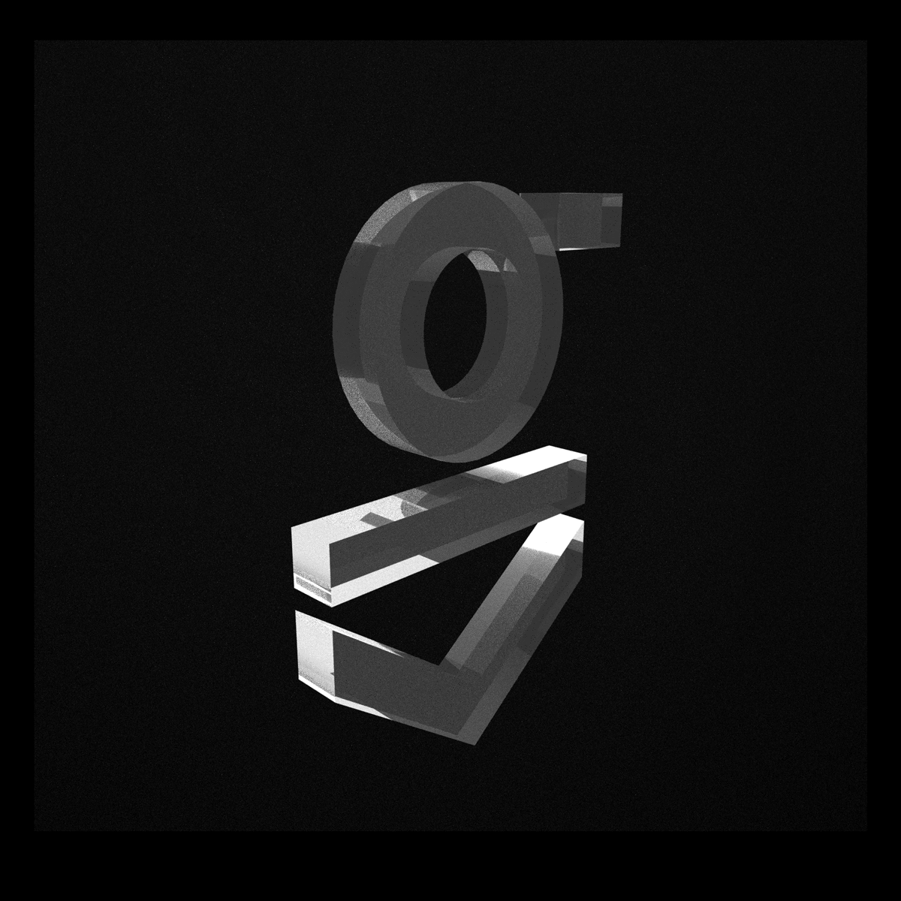

week 10October 26–November 1
– via “Interface Aesthetics”
“Compression by Abstraction: A Conversation About Vectors” — Rafaël Rozendaal and Jürg Lehni
“I always felt that using a computer, we should not try to depict the world in ways that were possible before, like photography and video. We should find new ways of depicting. I always felt like pixels are an approximation of reality, and vectors are a reconstruction.”
— Rozendaal
Visuals translated onto the screen are approximations. What happens when we create digitally native work, not imitative of reality, but just compositions of light and language?
The aesthetics of digitally produced works: crisp, clean. All roughness is inherently artificial, a simulation. A randomized function is not the same as how rocks erode or how the hand has naturally arising quirks. The physics of digitally native works is up to its creator. Friction and gravity are added. Friction on the web is expressed more strongly through action/experience, not “physical texture,” because there is no “material.”
“I already explained some of the reasons as to why I prefer open software in my various answers. In the end it really has to do with freedom and control. I don’t like being tied into an ecosystem that is provided by one private company. Technology should be our friend, it should be available to all of us, and it should be dynamic like our languages are. I see technology as a core component of our culture, and just like how we all use language and participate in its constant change, we should get to a point where we see technology not as something that controls us and that we are afraid of, but as a liberator, a means of expression, and a catalyst of change.”
Digital work has the ability to be immediately shared via a link, a compression of its form as code, a string of letters.
Considerations when reviving type: is the design decision in service of function (whether aesthetic, legibility, mood, etc.) or 1-to-1 imitation? Artifacts of form (byproducts of letterpress, etc.) probably don’t belong in digitally native / applied type. The noise in printed letters occurs from the transfer of its original form (metal, wood, digital file) to material (paper). Web fonts are created on the medium in which they are to be displayed. So the forms are truer (ignoring hinting). The forms are simpler crisper/cleaner than printed type.
Attempting to imitate the byproducts of material transfer complicates the type design process and undermines the letterform. It makes it overdone. It’s unnatural. So don’t overthink the pure shape of the letter. Would designers have been so microscopically finicky before the ability to zoom and be precise in pixels on a 1000 by 1000 grid? Each point adjustable with one click?
Does contemporary type mean crispness? An invisible hand? What is authorship in type design?
Contemporary type is able to be crisper than before with even higher contrast than a Bodoni, which could only get so thin as metal type. A trend now is also geometric sans, especially in tech companies. But they’re even more geometric than those from the mid 1900s. Why? Is it the result of the tie between tech companies and digital aesthetics of vectors? Mathematical shapes produced by equations, language, rather than hand drawn? Why add serifs? It’s unnatural for a digitally native letterform. Calligraphy is not the root of form. The geometric sans is simplification of letterform, no byproducts of physically created letters but adjustments stemming from optical convention.
So why revive for purposes beyond studying form? Is type revivalism a form of appropriation? Is it a way of rectifying past type, type made from laborers prior to the formalization of type design education? Is selling it problematic?
Making type isn’t easy, but pure revivals are less strenuous in a way: there is a form to follow. Making a new type with no 1-to-1 reference takes longer and it’s trickier. So is the practice of revivals or heavily referencing history a way of coping with commercial demand? Is it a way to get type onto the market quicker? This is what happened with Monotype: they made revivals because that’s what people wanted. Since then the qualities of revivals has improved. And it’s still practiced because we have only recently become “post-screen,” in terms of not having to work too much within the restrictions of low-res displays. So now what?
Now we should push toward digitally native types, which is where variable fonts are getting to. But letters shouldn’t be animated for animation’s sake… or should they, initially? If a letter has the possibility to be animated (if its form suggests such a path), typographic and communicative possibilities expand. A new expression of language is unlocked. It must all start somewhere; it can always be improved. The rectangular bounding box that has restricted letters since metal type has now become responsive. What’s next?
Type design is less intimidating when thought of as 2D sculpture instead of drawing with permanent marker.
I never really got into collaging, which is what a lot of graphic design feels like, but ceramics and carving were always enjoyable, albeit more physically laborious.
— ah! Browser as drawing machine.
This class is awesome.
“Untitled Sans & Serif Design Information” — Klim / Kris Sowersby:
  
– The Future Mono
“Most new typefaces are imbued with layers of history, aesthetic associations and cultural signifiers. Amplified by heavy doses of spin and marketing, these layers are elucidated with the inevitable ‘design information’ blurbs — an accepted (and expected) part of selling and buying a typeface. To lend a new typeface prestige, these blurbs reveal the old specimens that influenced it, and name-drop typographers and foundries long dead. They detail the ‘engineering challenges’ the typeface has heroically overcome — usually small printing sizes, low pixel resolution or limited horizontal/vertical space. Contemporary typefaces are touted as the complete aesthetic and technical package.”
Enough with validating type? What matters most is the actual type that you see and what it says.
Sowersby has been doing interesting things in marketing his type. Type specimen aren’t enough anymore. It’s kind of nostalgic and a bit romanticizing of type… Are contemporary printed type specimen, type that is maybe predominantly used on the web, another way of trying to relate type to historical precedent? Type specimens are weird objects, collectibles, but not really that effective for getting fonts in the hands of the people. Font marketing itself also should move toward being digitally native… without being novel in its animation.
— patatap.com, as presented by Maggie; keyboard as piano keyboard
“designers have devised almost all possible variations; there seems to be no limit to human ingenuity when it comes to varying letterforms”
— Gerard Unger, Theory of Type Design, pg. 11
There is always room for another voice with changing contexts, changing people, changing language, changing form.